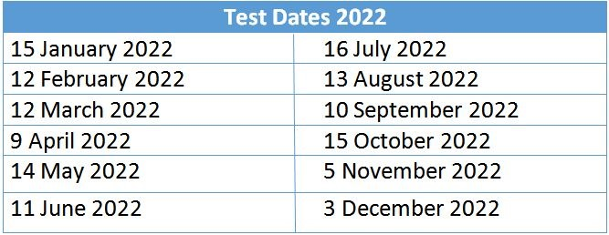

Institut Teknologi Del
MarTuhan, Marroha, Marbisuk
MarTuhan, Marroha, Marbisuk
SIPATEN (Sistem Informasi Kepangkatan Tenaga Dosen) adalah aplikasi dekstop yang akan di gunakan oleh seluruh perguruan tinggi swasta yang terdaftar di LLDikti 1 Sumatera Utara untuk Jabatan fungsional dosen, dengan adanya aplikasi ini diharapkan akan membantu proses pengajuan dan pembuatan SK Jabatan Fungsional Dosen.
Koperasi Serba Usaha (KSU) IT Del dimulai kembali pada tanggal 8 Agustus 2008 sampai dengan saat ini, tahun 2014. KSU IT Del didirikan berdasarkan badan hukum dengan No Badan Hukum No : 49.A / BH / KUKM-TS / 2004, per tanggal 7 April 2004. Yang menjadi anggota KSU IT Del adalah dosen, staff, karyawan dan mahasiswa. Usaha yang dilakukan oleh KSU IT Del adalah:
1.Menjual kebutuhan bagi anggota dan mahasiswa
2.Menyediakan jasa printer
3.Menyediakan angsuran barang elektronik
4.Bekerjasama dengan klub usaha mahasiswa dalam melakukan penjualan barang koperasi
Dalam membantu anggota yang membutuhkan dana baik tujuan keluarga, usaha, dll, KSU IT Del menjalankan usaha simpan pinjam. Jumlah pinjaman yang dapat dilakukan oleh anggota sampai dengan saat ini antara Rp. 1.000.000 s/d Rp. 20.000.000,- dimana sebagian besar anggota melakukan pinjaman sebesar Rp. 5.000.000,-.
Berikut ini adalah beberapa pencapaian KSU IT Del tahun 2012:
Jumlah Asset ( Asset Lancar dan Asset Tetap ) tahun 2013 yang dimiliki KSU IT Del sebesar Rp. 79.658.631,-.
Berdasarkan neraca Koperasi Serba Usaha IT Del per tanggal 31 Juli 2012 dan 31 Juli 2013, jumlah Sisa Hasil Usaha ( laba ) yang diperoleh oleh koperasi adalah: Rp 26.933.109,-
RAT terakhir yang dilaksanakan adalah per 13 September 2012
Pengurus KSU IT Del periode 2013 - 2018:
Ketua : Rudi Silalahi
Wakil Ketua : Parlinggoman Napitupulu
Sekretaris : Larisma Simanjuntak
Bendahara : Dorlan Malau
Divisi Simpan Pinjam : Lasma Naiborhu dan Henrico Pasaribu
Divisi Pengawas : Deni Lumbantoruan, Fidelis Silalahi, Dohar Manik
The Language Center at Del Institute of Technology provides some programs and services for English skills development and for documents translations. Services for interpreting is also provided as requested. For individual English skills development, it is initially for preparation to sit an English test either for national or International standard tests. The most wanted English Proficiency Test, TOEFL institutional test, is provided as requested and also provided every year for a fix date to the third year students of IT Del.
Some other services for English professional development are also provided and are grouped into some classes as follows:
1.English for Communication
2.TOEFL Test Preparation
3.IELTS Test Preparation
4.English for Nursing
5.English for Information Technology
6.English for Administration and Secretary
7.English for Oil and Gas
These courses can be ordered in person or for a group of people sharing the same interest for a specific course.
Those above mentioned services are offered not only to Del students and staff but also to the general public in the local community and beyond.
For further inquiries, please contact:
Monalisa Pasaribu via email to monalisa.pasaribu@del.ac.id or call (0632) 331234
IT Del has administered TOEFL ITP Test (Test of English as a Foreign Language Institutional Testing Program) since 01 June 2013 after signing the MoU between IT Del and IIEF (The Indonesian International Education Foundation). IIEF operates under the supervision of ETS America. The score of TOEFL ITP given by IIEF is the score that is officially issued by Educational Testing Service (ETS), Princeton, United States of America.
TOEFL ITP test or well known as TOEFL institutional test is administered every month in IT Del in 2022 with the following timetable:
| NO | Nama | Jabatan | Tanggung Jawab |
|---|---|---|---|
| 1 | Dedy Anwar, S.T., M.T | Kepala UPT PP-ESTEM | Pimpinan UPT yang bertanggung jawab atas terlaksananya kegiatan pada UPT PP-ESTEM dalam mencapai visi, misi, dan tujuannya |
| 2 | Dr. Merry Meryam Martgrita, S.Si, M.Si | Divisi Pelatihan | Tim yang bertanggung jawab atas kegiatan pelatihan yang dilaksanakan UPT |
| Niko Saripson P. Simamora, S.T., MAB | TPP-ESTEM baik pelatihan untuk internal sivitas maupun untuk pihak eksternal. | ||
| Monalisa Pasaribu, SS., M.Ed (TESOL) (Dosen Pedagogi) | Tim ini dapat dipimpin oleh seorang kepala Divisi jika ketersediaan personel mencukupi. Jika tidak, tim ini akan langsung bekerja di bawah koordinasi Kepala UPT PP-ESTEM | ||
| 3 | Indra Hartarto Tambunan, Ph.D. | Divisi Penelitian dan Pengembangan | Tim yang bertanggung jawab atas kegiatan penelitian yang dilaksanakan UPT PP-ESTEM. |
| Johannes Harungguan, S.T., M.T | Tim ini dapat dipimpin oleh seorang kepala Divisi jika ketersediaan personel mencukupi. Jika tidak, tim ini akan langsung bekerja di bawah koordinasi Kepala UPT PP-ESTEM dan bekerjasama dengan LPPM IT Del | ||
| 4 | Dr. Inggriani Liem | Divisi Kerjasama | Tim yang bertanggung jawab atas penjalinan kerjasama dengan pihak luar yang dilaksanakan UPT PP-ESTEM. |
| Dr. Arlinta Christy Barus, S.T., M.InfoTech | Tim ini dapat dipimpin oleh seorang kepala Divisi jika ketersediaan personel mencukupi. Jika tidak, tim ini akan langsung bekerja di bawah koordinasi Kepala UPT PP-ESTEM dan bekerjasama dengan LPPM IT Del | ||
| 5 | Prof. Dr. Syawal Gultom, M.Pd. | Tenaga Ahli | Pakar bidang pedagogi yang memberikan arahan pada setiap kegiatan di UPT PP-ESTEM. |
| 6 | Wilda Panjaitan, S.T. | Tenaga Administrasi | Personel yang bertanggung jawab untuk menjalankan kegiatan administrasi yang mendukung |
| Chintya Sinar Lumbantoruan, S.T | berjalannya semua kegiatan di UPT PP-ESTEM |